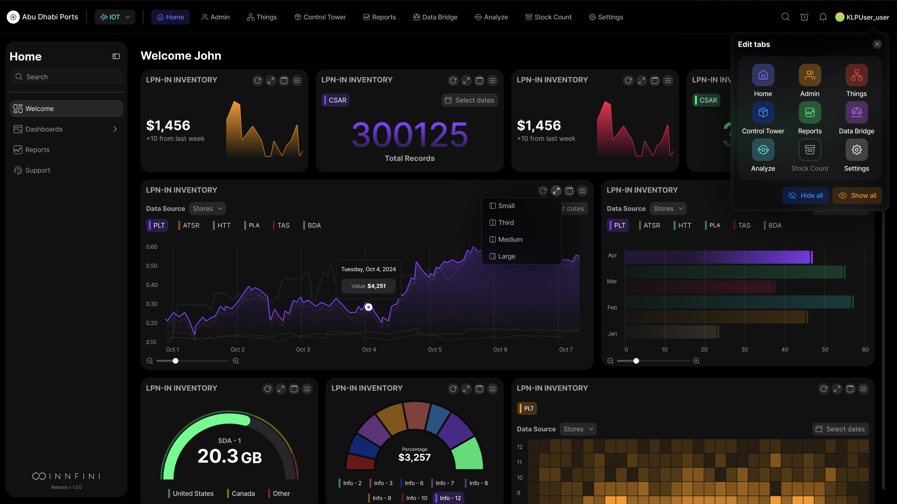
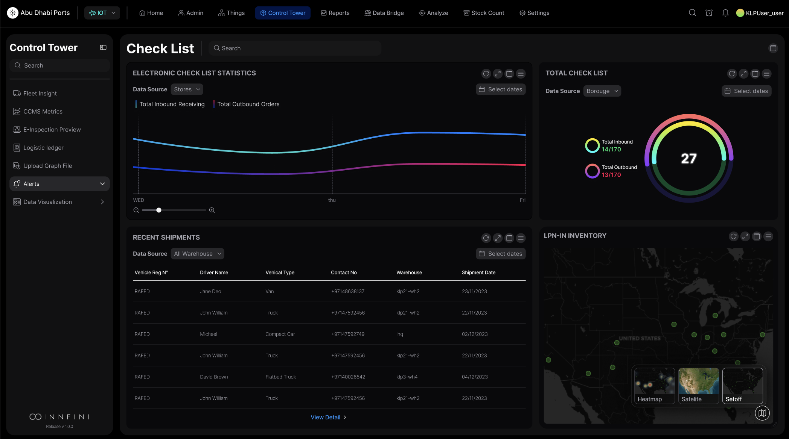
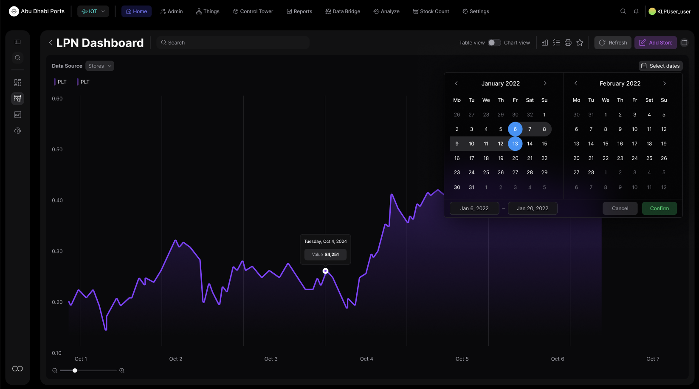
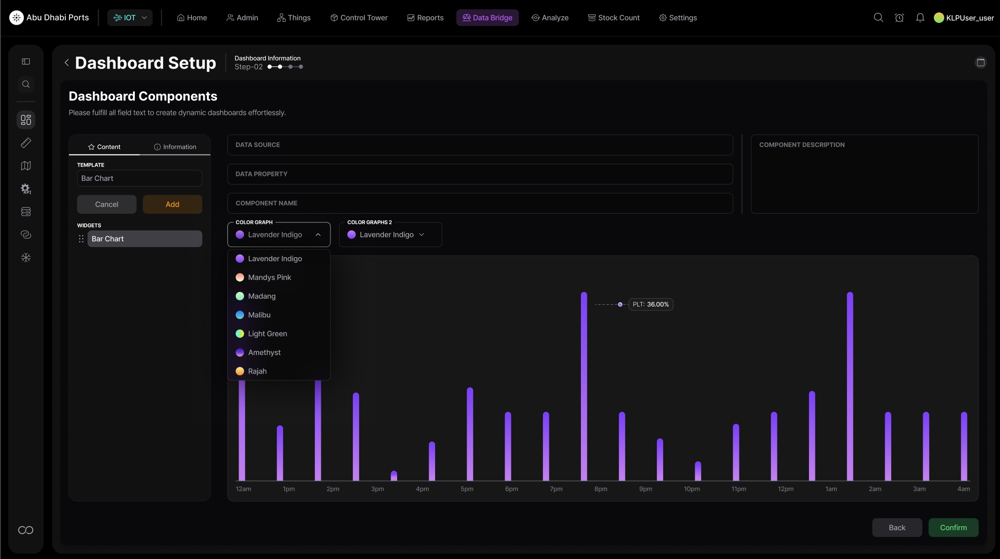
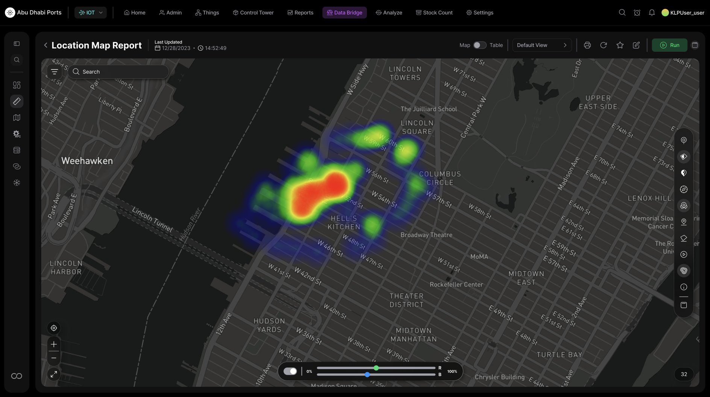
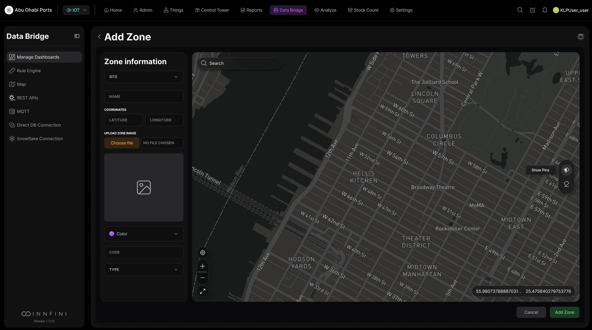

// Product tour · 01 · Operations home
The default command canvas.
Operations Home is the starting surface that brings every other platform capability into one screen — live KPIs, asset signals, exceptions, AI recommendations, geospatial intelligence, workflow timers and audit-grade events — composed by the operator who's using it.
KPIs
Exceptions
Workflows
Recommendations
app.innfini.io · operations · home
Live

// What's on Operations Home
Five panels. One canvas.
Every panel updates continuously, every tile is drillable, and every recommendation comes with the reasoning trail behind it.
01 · KPIs
Live Operational KPIs
Asset movement, exceptions, SLA status, alerts, workflow progress and site performance — continuously updated.
- Assets tracked · 48,230
- Open exceptions · 17
- SLA risk · 6 · Device health · 98.7%
02 · Exceptions
Priority Exception Panel
The events that need attention now — sorted by severity, with recommended actions and one-click escalation.
- Severity badges · Critical · High · Medium · Low
- Location + time stamped
- One-click recommended action
03 · Recommendations
AI Next-Best-Action
Plain-English recommendations grounded in live events, history and business rules — with the reasoning behind every one.
- Escalate · dispatch · reassign
- SOP-aware suggestions
- Cited reasoning
04 · Workflows
Workflow & SLA Status
Track inspections, work orders, transfers, incident responses and maintenance — all with active SLA timers.
- Owner · stage · % complete
- SLA timer + escalation status
- Approval queues
05 · Timeline
Live Activity Timeline
Continuous timeline of asset reads, sensor events, user actions, workflow changes and system updates.
- Real-time event stream
- Object + location + status
- Click to drill into any event
06 · Sites
Site & Zone Performance
Per-site, per-zone health — assets present, exceptions open, dwell pressure, device status.
- Capacity meter
- Open exception count
- Device-health summary
Operations Home · KPI tiles, exception list, AI recommendations
The home canvas
Where every shift starts. The default Innfini canvas surfaces every operator's most important KPI tiles, the priority exception queue, AI-recommended actions and an always-live operational pulse. Every tile drills into one of the deeper surfaces below — assets, work orders, maps, reports — so this is the one screen an operator never has to leave.
Control Tower · Check-list, totals, recent shipments, LPN-in inventory geomap
Composable tower

Operators compose their own dashboards. The Control Tower replaces fixed pages with a composable canvas — electronic check-list statistics, total radial, recent-shipments table and LPN-in inventory geomap, every widget bound to a live data source. Layouts are role-aware: dispatchers see queues, supervisors see SLA timers, executives see rollups.
LPN Dashboard · drill-down from any KPI tile
Drill to detail

Two clicks from summary to single SKU. Click any KPI tile on the home canvas and the LPN dashboard opens with chart + table side-by-side, a date-range scrubber, and the underlying ledger of agent decisions that produced every value. Comparison cohorts, historical replay over a 2-year window, one-click favorites and sharing — all without a SQL query.
Data Bridge · Dashboard Setup (bar chart template, color picker, live preview)
No-code builder

Builders for non-developers. Operators add their own KPI tiles via the Dashboard Setup — pick a chart template, bind to a data source, choose a color palette, see live preview. The same builder powers the home canvas — there's no separate "admin mode" or YAML to learn.
Location Map · Asset density and zone activity geo-overlay
Geospatial drill

Where the work is happening — right now. The Activity Map tile expands to a full geospatial canvas with heatmaps for asset density, zone activity, R/B channel blending and overlay filters. Operators flip from "all assets" to "high-value, last 24h, in transit" in seconds — without ever leaving the home dashboard's flow.
Data Bridge · Add Zone (site selector, coordinates, type, code, color)
Configure live

Zones, geofences and operational rules — configured from the canvas. Add a new zone, upload its floor plan, set its color and code, draw its geofence on a live map — and from that moment every event, exception and KPI on the home canvas is zone-aware. No restart, no deploy, no engineer.
// Why Operations Home matters
One starting point. Faster decisions.
01 · Unified view
One Operational View
All KPIs, alerts, exceptions and workflows in one place — no dashboard switching.
02 · Faster response
Surface What Matters
Urgent risks and recommended actions surface immediately, not after digging.
03 · Smarter priority
Focus Teams
Teams work the right thing first — backed by AI ranking and SOP context.
04 · Better control
Track to Completion
Workflows, escalations and SLA progress are all visible from one canvas.
Operations Home turns INNFINI into the daily command workspace — live visibility, exception management, AI recommendations, builder tools, geospatial intelligence and workflow control, all reachable from one canvas.